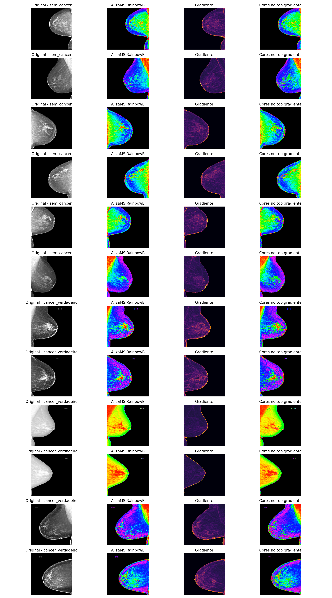

Inteligencia Artificial
Modelos preditivos, arquiteturas experimentais e integracao de inferencia em aplicacoes.
Desenvolvedor e pesquisador independente
Inteligencia Artificial, Visao Computacional e Software Aplicado
Desenvolvo sistemas que transformam dados, imagens e conhecimento tecnico em solucoes executaveis: modelos locais, APIs, automacao e pesquisa computacional.
01 / Sobre
Atuo na intersecao entre desenvolvimento de software e investigacao independente, criando experimentos e aplicacoes em inteligencia artificial, processamento de imagens, recuperacao de conhecimento e simulacao.
Meu trabalho combina Python e C/C++ para algoritmos e modelos, FastAPI e PostgreSQL para servicos, Angular para interfaces e execucao local quando controle e privacidade importam.
02 / Atuacao
Modelos preditivos, arquiteturas experimentais e integracao de inferencia em aplicacoes.
Extracao de caracteristicas, analise de imagens e pipelines para dados medicos.
Estrategias, coordenacao e geometria computacional aplicadas a simulacao RoboCup.
Backends em FastAPI, integracoes e fluxos reprodutiveis orientados a dados.
Busca semantica e analise de documentos tecnicos com modelos executados localmente.
Entropia, criptografia experimental e hardware embarcado com Arduino e ESP32.
03 / Projetos
Agentes autonomos com IA e geometria computacional para decisao, posicionamento e cooperacao em ambiente competitivo simulado.
Pipeline para indexacao, busca contextual e analise assistida de documentacao tecnica com modelos locais.
Analise computacional de mamografias com caracteristicas locais, frequencia, gradientes e modelos de aprendizado.
Experimentos computacionais para explorar variacao, classificacao e interpretacao de dados biologicos.
Investigacao de fontes fisicas de entropia e aplicacoes em criptografia experimental embarcada.
Pesquisa em destaque
Comparacao experimental entre imagem original, pseudocor inspirada em RainbowB e mapas de gradiente para investigar padroes estruturais em exames classificados na base de pesquisa.

04 / Habilidades
Tecnologias aplicadas a pesquisa, prototipagem e sistemas de producao.
05 / Pesquisa
Visao computacional
Pipelines baseados em patches, caracteristicas espectrais e aprendizado profundo para pesquisa experimental, sem uso diagnostico.
Agentes autonomos
Comportamento coordenado, tomada de decisao e estrategia para equipes de agentes simulados.
Conhecimento local
Uso de modelos locais para consultar fontes especializadas e automatizar fluxos de investigacao.
06 / Contato
Disponivel para contato profissional, colaboracoes em pesquisa e desenvolvimento de software aplicado.